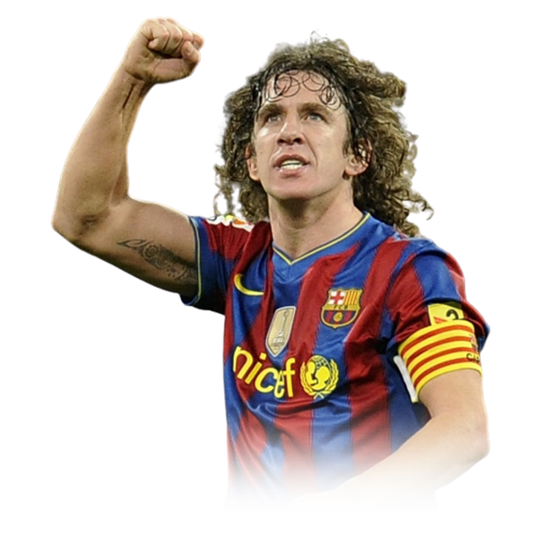
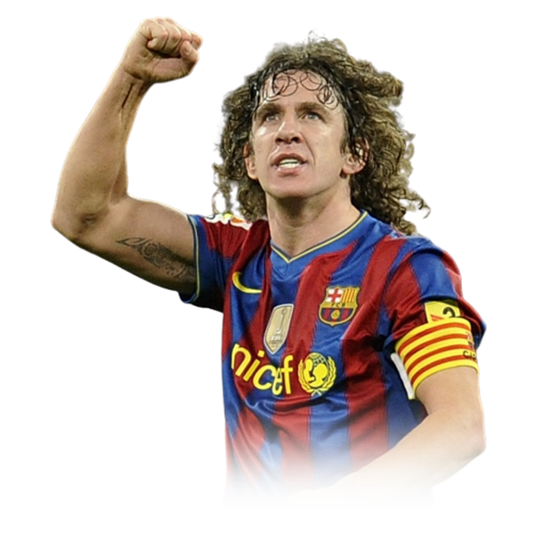

Més que un capità
 
Carles Puyol en 2010

Carles Puyol en 2010
Va començar a entrenar-se amb el primer equip de l'CF la Pobla. Corria l'any 1992. Tenia 14 anys, però al no haver equips inferiors, l'entrenador el va introduir a poc a poc amb la gent gran en els entrenaments. Amb 15 anys ja va tenir fitxa, però no va arribar a debutar.
Puyol ha estat 100 vegades internacional per Espanya i 6 per Catalunya. Ha participat en uns Jocs Olímpics (2000), en tres Mundials (2002, 2006 i 2010), en dues Eurocopes de Nacions (2004 i 2008) i en una Copa Confederacions (2009).